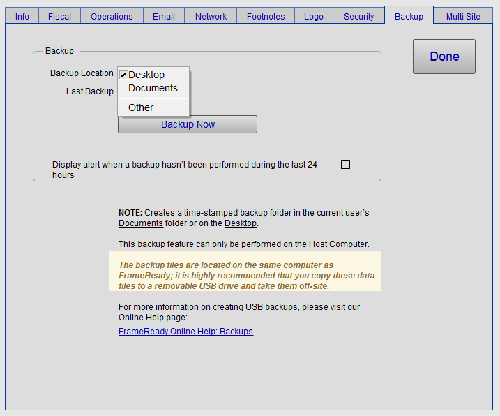
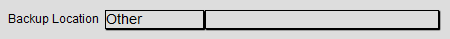
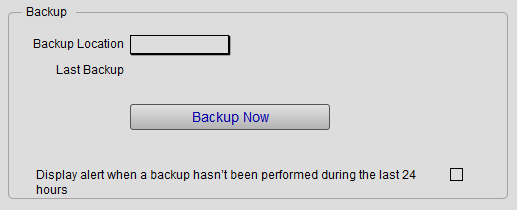

Set up Single User Backups
FrameReady includes backup capabilities; we recommend you use them exclusively.
Setup Data - Built-in Backup tab Explained
-
There are two types of FrameReady setups: Single Computer users and FileMaker Server users.
-
Single Computer setups use the manual "Backup Now" feature in FrameReady.
-
FileMaker Server setups use the scheduled backup tools in the FileMaker Server admin console.
-
Before You Begin...
These steps are very important to keep your FrameReady in good, working order.
If you must use a third-party backup solution...
-
then you must also exclude the FrameReady folder from all backups it makes. Failing to do so will likely result in damaged database files, lost or conflicting data.
If you are using Time Machine on your Mac...
-
then you must exclude the FrameReady folder from all backups it makes. Failing to do so will likely result in damaged database files, lost or conflicting data.
If you are using Anti-Virus software on your computer...
-
then you must also exclude the FrameReady folder from its scanning activity. Failing to do so will likely result in damaged database files, lost or conflicting data.
In conclusion...
-
Use the built-in FrameReady backup feature to backup the FrameReady folder.
-
Do not allow other backup software to backup the FrameReady folder.
Where is FrameReady Installed?
For Single Users, the Default location of FrameReady 13
-
Windows: C:\Users\[Account name]\FrameReady 13
-
mac OS: Macintosh HD\Users\[Account name]\FrameReady 13
For Single Users, you can specify where FrameReady should store file backups of itself.
-
You can choose a backup location of Desktop, Documents, or Other.
-
Each backup is stored in a date-and-time-stamped folder so you can roll-back to a specific date if needed.
-
While FrameReady can make a backup of itself, it cannot delete them. This means all backups are preserved until you remove them manually to create free space on the storage device.
-
FrameReady can also display a helpful, visual alert (on the Main Menu) every 24 hours to remind you to backup.
How to set up your Backup Folder
Note: these steps are for single installations of FrameReady only.
-
Log in as level4.
-
On the Main Menu, click the Setup Data button.

-
Open the Backup tab.

-
Choose where to store the backup files.
Options include: Desktop, Documents, and Other. -
A special folder labelled FrameReady Backups will be created at your chosen location.
Inside of that folder will be date-time stamped folder(s), for example, 20220702_103641 (YYYMMDD_HHMMSS) -
If you choose Other, then a new field appears, to the right, for the path to the folder.

Click the empty field.
A file dialog appears; locate your backup folder and click OK (Windows) or Select (Mac).
Yes, you can plug in a USB device such as a flash drive and point the backup folder to it. Note that you do this at your own risk: you will need to monitor the flash drive so that it does not fill up.
Click the Press here to test path button. If the folder does not appear, then test has failed. FrameReady will not create a new folder for you, you must do this using Windows Explorer or, on the Mac, using Finder.
Click the Backup Now button to confirm that a backup has been created at your chosen location. -
Optionally, check the Display alert when a backup hasn't been performed during the last 24 hours. This displays a notice at the bottom of the Main Menu.

-
Click Done.
-
Note: If you have chosen Desktop or Documents, then you may need to manually copy the FrameReady backup for off-site storage. This can be a USB drive that you take home or an online cloud backup service.
Backup Tab Explained

Backup Location Field
-
Choose where to store the backup files.
-
Options include: Desktop, Documents, and Other.
Last Backup Field
-
The creation date and time of the last backup.
Backup Now Button
-
Creates a time-stamped folder in the location specified in the Backup Location field.
Alert Checkbox
-
FrameReady can alert to you create a backup if one has not been performed in more than 24 hours.
-
The message appears on the Main Menu, center-bottom.

-
Click the message to easily begin a manual backup.
© 2023 Adatasol, Inc.